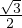
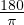
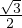
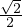
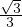

| α | 0∘ | 30∘ | 45∘ | 60∘ |
| sinα | 0 |  |  |  |
Kraadimõõduks nimetatakse nurkade mõõtmise süsteemi. Kraadimõõdus on mõõtühikuteks kraad, minut ja sekund.
Lisaks kraadimõõdule saab nurka mõõta radiaanides. Ringi kesknurk on ühe radiaani
suurune, kui see nurk toetub raadiusepikkusele kaarele. Radiaani tähistatakse
lühendiga rad ja üks radiaan on võrdne  kraadiga.
Radiaani omadusi:
On võimalik defineerida siinuse, koosinuse ja tangensi väärtused suvaliste
nurkade jaoks. Siinuse märk sõltub nurga veerandist, I ja II veerandis on siinuse
väärtus positiivne, III ja IV veerandis on see negatiivne.
| α | 0∘ | 30∘ | 45∘ | 60∘ |
| sinα | 0 | | |  |
| α | 90∘ | 180∘ | 270∘ | 360∘ |
| sinα | 1 | 0 | -1 | 0 |
On võimalik defineerida siinuse, koosinuse ja tangensi väärtused
suvaliste nurkade jaoks. Koosinuse märk sõltub nurga veerandist, I
ja IV veerandis on koosinuse väärtus positiivne, II ja III veerandis on see
negatiivne.
| α | 0∘ | 30∘ | 45∘ | 60∘ |
| cosα | 1 |  |  |  |
| α | 90∘ | 180∘ | 270∘ | 360∘ |
| cosα | 0 | -1 | 0 | 1 |
On võimalik defineerida siinuse, koosinuse ja tangensi väärtused
suvaliste nurkade jaoks. Tangensi märk sõltub nurga veerandist, I
ja III veerandis on tangensi väärtus positiivne, II ja IV veerandis on see
negatiivne.
| α | 0∘ | 30∘ | 45∘ | 60∘ |
| tanα | 0 |  | 1 |  |
| α | 90∘ | 180∘ | 270∘ | 360∘ |
| tanα | - | 0 | - | 0 |
Taandamisvalemiteks nimetatakse valemeid, mis võimaldavad mistahes nurga trigonomeetriliste funktsioonide väärtuse leidmise taandada teravnurga trigonomeetriliste funktsioonide väärtuste leidmisele. Taandamisvalemite kirjutamise reegli kohaselt, kui α < 90∘:
Trigonomeetrilised funktsioonid on perioodilised perioodiga 360 kraadi - näiteks sin(k ⋅ 360∘ + α) = sinα, cos(k ⋅ 360∘ + α) = cosα ja tan(k ⋅ 360∘ + α) = tanα, kus k on täisarv ja α ∈ [0∘;360∘).
Nende nurkade trigonomeetriliste funktsioonide väärtus võrdub samade
funktsioonide väärtustega nurgast α, mille ette tuleb lisada + või - vastavalt
funktsiooni märgile veerandis, kuhu esialgne nurk kuulus.
Näiteks:
sin(180∘- α) = sin α
sin(180∘ + α) = -sin α
cos(180∘- α) = -cos α
cos(180∘ + α) = -cos α
Kui nurk on esitatud kujul 90∘- α, 90∘ + α, 270∘- α või 270∘ + α, siis peab
taandamisvalemeid kasutades vahetama esialgse trigonomeetrilise funktsiooni
kaasfunktsiooni vastu (sin->cos, cos->sin, tan->cot, cot->tan). Märk tuleb võtta
esialgse fuktsiooni märgi järgi vastavas veerandis.
Näiteks:
sin(90∘- α) = cos α
sin(90∘ + α) = cos α
Negatiivse nurga siinus, koosinus, tangens ja kootangens:
Põhivalemid:

Kahe nurga summa ja vahe siinus, koosinus, tangens, kootangens:
Kahekordse nurga siinus, koosinus, tangens, kootangens:
Siinusteoreem: Kolmnurga küljed on võrdelised vastasnurkade siinustega:
Seega on kolmnurga kõigide külgede jaoks külje pikkuse ja vastasnurga siinuse
jagatis võrdne. Vastav jagatis on võrdne kahe kolmnurga ümberringjoone
raadiusega.
Koosinusteoreem: Kolmnurga ühe külje ruut on võrdne ülejäänud külgede ruutude summaga, millest on lahutatud nende külgede kahekordne korrutis nende külgedevahelise nurga koosinusega.